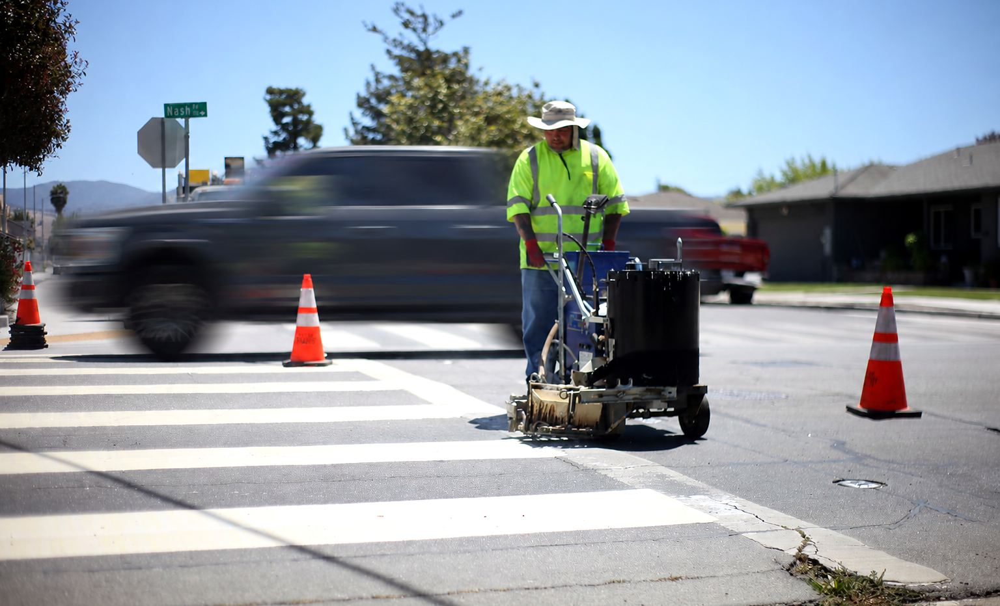
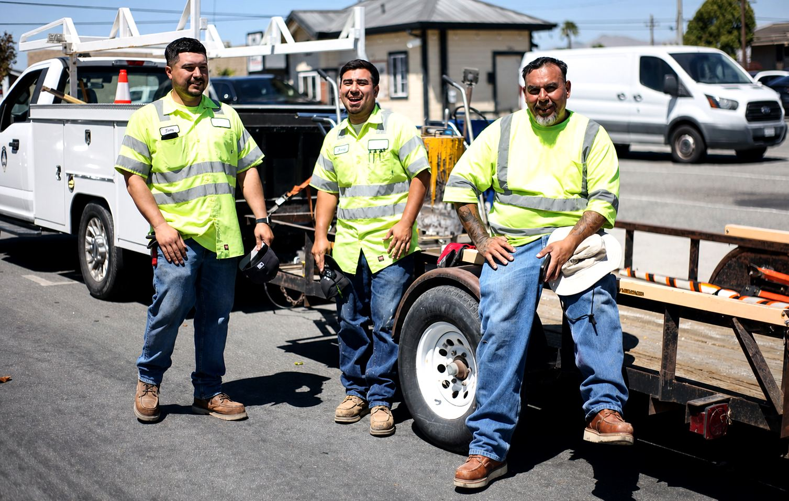
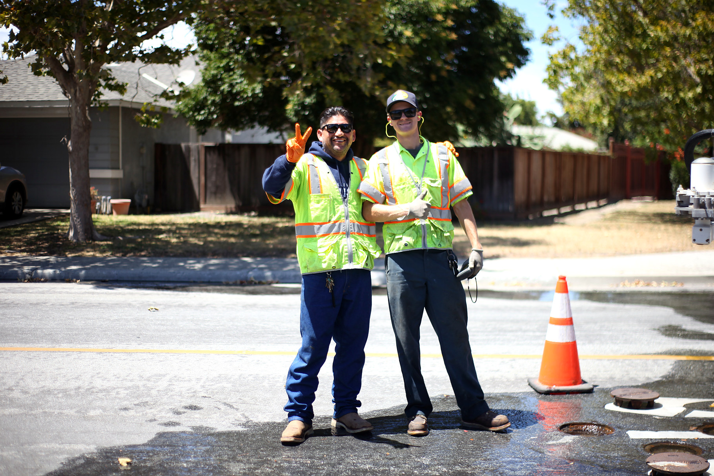
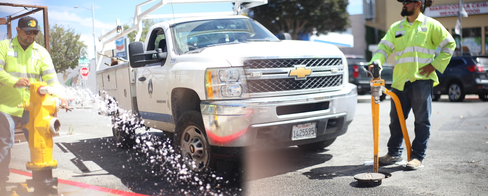
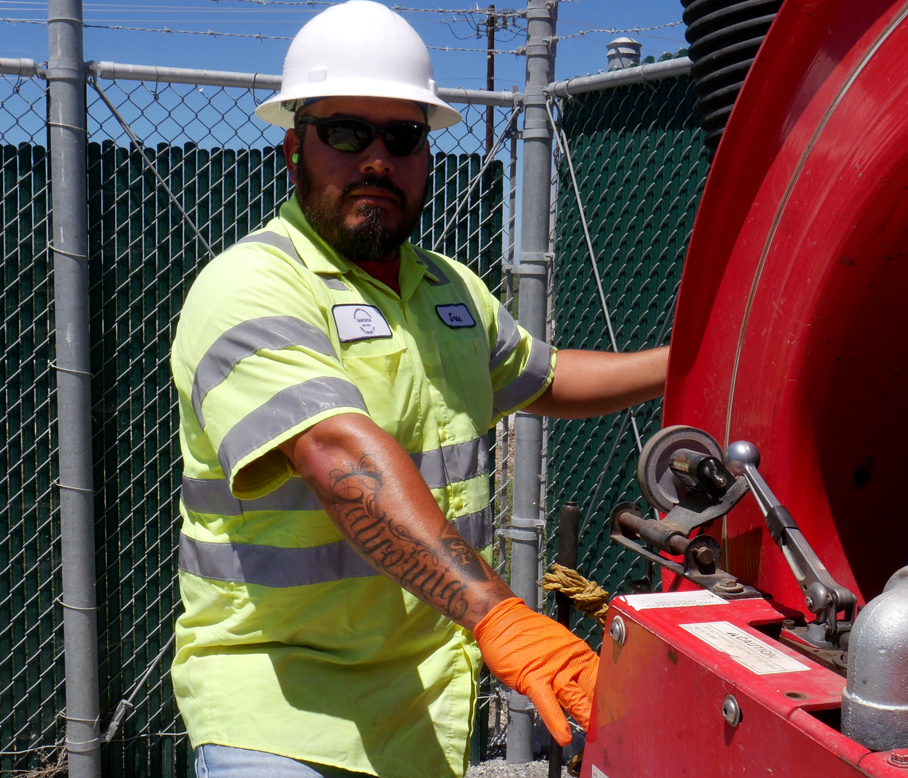
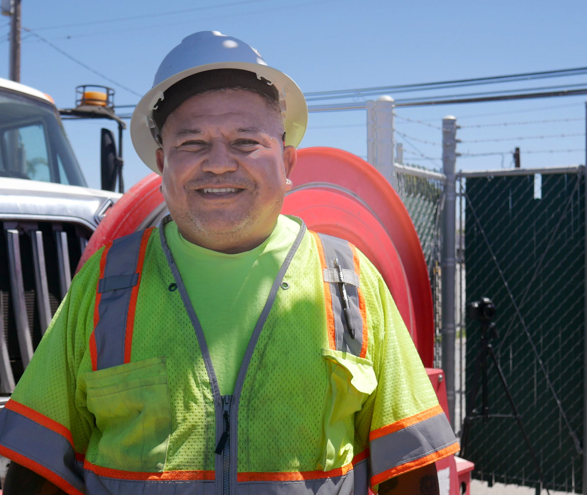

City of Hollister employees are the backbone of the services residents rely on every day.
City services and good local jobs are under pressure as Hollister weighs staffing reductions, reorganizations and different ways of providing public services. Workers are asking that service levels, safety, response times, costs and local knowledge be considered before permanent changes are made.
Maintaining the city gets harder when:
- Fewer frontline workers are expected to cover the same essential work.
- Departments are reorganized or responsibilities are shifted without clear service-level analysis.
- Outside service models are considered without a complete comparison of cost, accountability and local knowledge.
The work you don't see

Sometimes a row of cones and a reflective vest are all that separate the crew from traffic. One worker operates the equipment while another watches approaching vehicles. Hot materials, moving cars and changing conditions make experience and teamwork essential.

Fewer workers, more pressure
Public work does not shrink because a budget does. Residents still expect someone to respond when a roadway needs attention, equipment fails, or an emergency interrupts routine maintenance.
When fewer workers cover the same amount of work, routine maintenance can be postponed and small problems can become more expensive problems later. Experience is what helps crews recognize risk early and keep the work safe.
Tap any photo to see it larger
Water does not wait

Water work is precise, physical and unforgiving. Crews maintain valves, hydrants, lines and field records while keeping service moving around them. Local system knowledge matters when pressure drops, a line fails, or a repair has to happen quickly.

Water crews perform many different tasks in a single shift: flushing hydrants, turning valves, seating covers, documenting field conditions and maintaining equipment. Staffing choices determine how much backup and response capacity remains when something goes wrong.
Tap any photo to see it larger
Engineering does not cut corners
Tania Gonzalez handles detailed work that has to happen before a city project reaches the street. Specifications, schedules, records and project history are the quiet checks that help catch problems before they become expensive field mistakes.
Tap any photo to see it larger
When the drains fail


Sanitation and storm crews maintain lines, lift stations and specialized equipment that help prevent backups and flooding. Some infrastructure is old and complex. Knowing where problems are likely to occur and how to respond safely comes from hands-on experience.
Tap any photo to see it larger
The people who keep Hollister running
Hollister is not maintained by spreadsheets or organizational charts. It runs because experienced people show up and do the work.
Residents understand that cities face difficult budget choices. The question is how those choices affect service capacity, response times, public accountability and the experience needed to maintain aging infrastructure safely.
Public employees carry knowledge that is difficult to replace quickly. They know the equipment, the streets, the systems and the history behind recurring problems.
Knowledge like this is built over years and can be lost in a single budget cycle.
City of Hollister employees are the backbone of our community. They repair streets, maintain water and sewer systems, review plans, keep records moving and respond when public infrastructure fails.
Hollister is deciding more than a budget. It is deciding how much service capacity and local knowledge it keeps in-house.